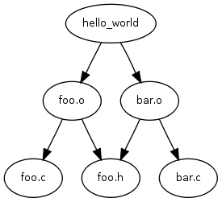
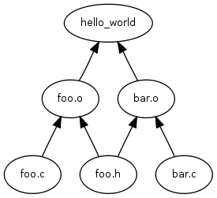
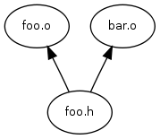
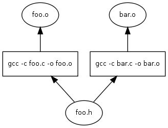
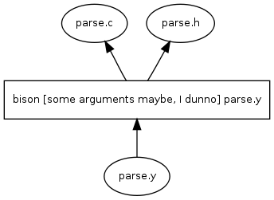

Get tup: http://gittup.org/tup.git
Command LineContact me using marfey if you have any questions, suggestions, or bug reports. This is on gmail.com. At some point there may be a mailing list.
Tup is a build system / dependency manager program - it inputs a list of file changes and a DAG (directed acyclic graph), then processes the DAG to execute the appropriate commands required to update dependent files. The DAG is stored in an SQLite database. The list of file changes can be generated manually, or by running the included file monitor daemon. By providing the file change log up front and storing the dependencies in an efficient database structure, updates can be performed with very little overhead. The monitor daemon uses inotify, so it is currently linux only. The rest of tup could probably be pretty easily ported to other UNIX-y systems, I think.
You can use tup anywhere you would use another build system (like make, or any of its derivatives). The reason you would want to use tup is if you like to update things very quickly. For example, if you typically execute a build in a subdirectory because it takes too long to figure out what to do when you execute the build from the top, you might want to look into tup. Unfortunately, tup is so fast that your chair mounted jousting might suffer. I apologize in advance if someone besmirches your honor and you are unable to properly defend yourself as a result.
In a typical build system, the dependency arrows go down. Although this is the way they would naturally go due to gravity, it is unfortunately also where the enemy's gate is. This makes it very inefficient and unfriendly. In tup, the arrows go up. This is obviously true because it rhymes. See how the dependencies differ in make and tup:
| Make | tup |
|  |  |
See the difference? The arrows go up. This makes it very fast. The reason it is so fast is because you tell tup ahead of time what file you changed. So if you change foo.h here, in make you have to look at all the dependencies trying to find arrows that go to foo.h. With tup, it will start at foo.h and follow the arrows until there aren't any more arrows to follow. In this case, it doesn't have to ever look at foo.c or bar.c. Instead of just foo.c or bar.c, imagine if that was a whole part of the build tree that had a million nodes. Can you imagine a million nodes? If you stacked a million nodes up end to end, it would go around the earth 12 times and then up to the moon and back. Clearly, this would take a long time to find all the arrows.
In reality, the tup graph is a little more complex. It actually includes the commands that were executed in the DAG so it can handle commands with multiple outputs. Consider these partial DAGs:
| Partial DAG 1 | Partial DAG 2 |
|  | |
In the first case, we'd have to run two commands (gcc on foo.c and gcc on bar.c). In the second case, we'd have to run bison once on parse.y. (I think that's how it works - I never really use bison, except that one time in CS class. This is evidenced by my completely lackluster and substandard parser code in tup).
| DAG with Commands 1 | DAG with Commands 2 |
|  |  |
Now it is very easy to read the DAG and run the appropriate commands. All of these nodes are stored in an indexed sqlite database, so they can be retrieved I think in log(N) time.
Tup is currently released under the same conditions as marfitude. So, the source code is free to download and use under the conditions of the GPL. Also, you are encouraged to donate some of your millions or your time to some place worthy, rather than to me, since I am but a pale ghost of my former self, and may be hit by a bus at anytime. Just think of all the time you saved with tup, and how much that is worth to you, and maybe do something about it.